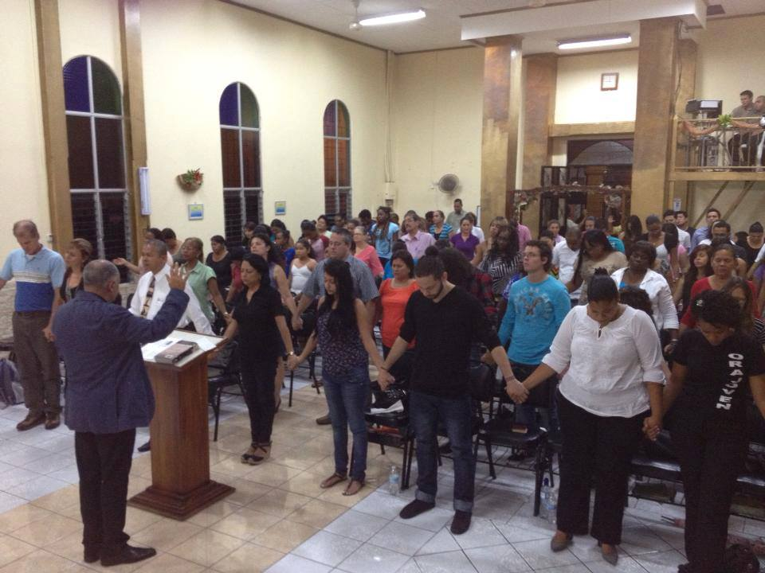
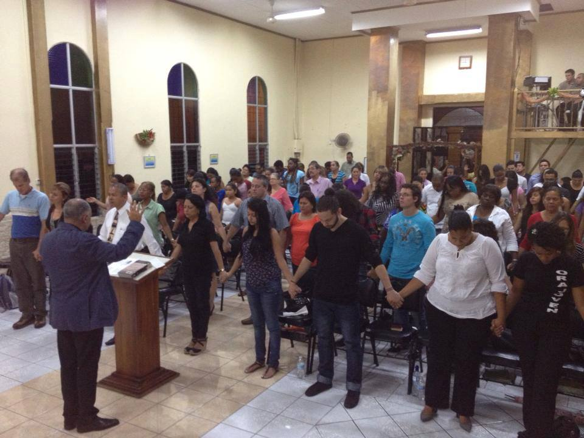

LIMÓN
Coordinadora: Ana Matarrita
E-mail: ana.matarrita@gmail.com
El ministerio de Limón busca apoyar iglesias que claman por la transformación de la provincia con el mayor índice de criminalidad, drogas, prostitución y ocultismo de Costa Rica. CPCI desea apoyar a las iglesias de Limón a través de programas de evangelización, guerra espiritual y capacitación de liderazgo con la intención de alcanzar las comunidades de forma práctica. El ministerio ofrece seminarios de acuerdo con las necesidades sentidas por las iglesias también.

 
